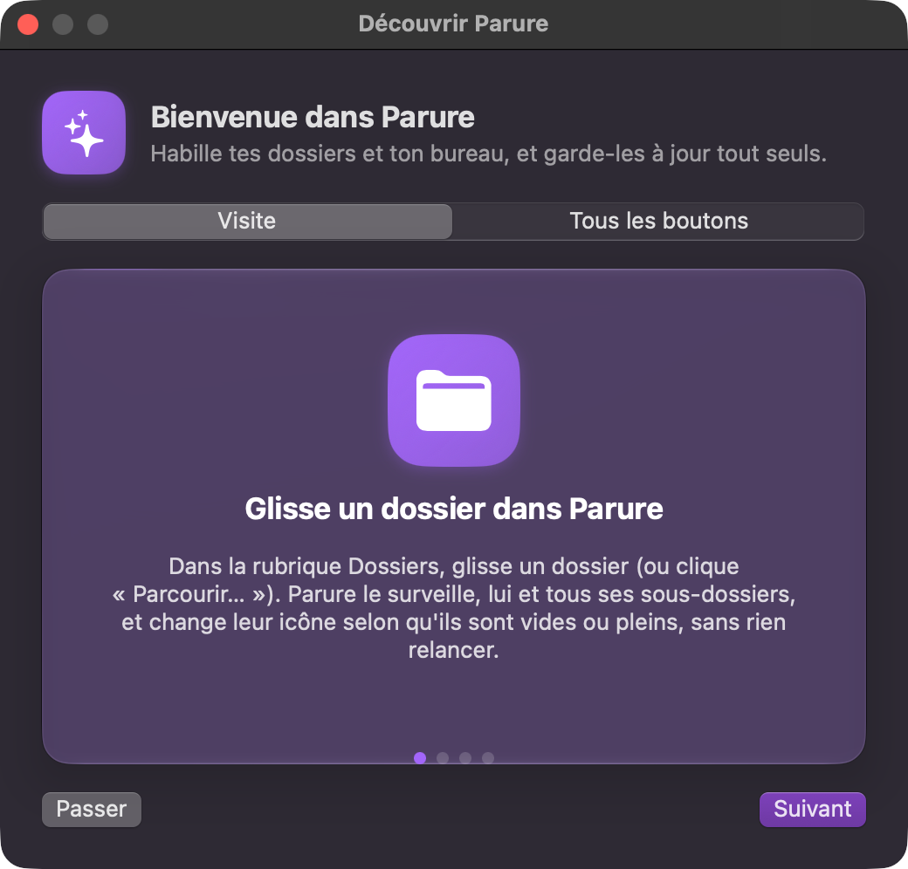

Parure
Habille tes dossiers et ton bureau, et garde-les à jour tout seuls.
Icônes de dossiers
- Icônes vide / plein — chaque dossier surveillé (et tous ses sous-dossiers) change d'icône selon qu'il contient quelque chose ou non.
- Suivi en continu — les changements sont détectés en direct, sans rien relancer ; l'icône se met à jour toute seule.
- Héritage état par état — un sous-dossier peut hériter le « vide » de son parent tout en ayant son propre « plein », et inversement.
- Seuls les choix explicites sont enregistrés — un arbre de 5 000 dossiers avec 2 exceptions ne stocke que 3 entrées.
- Règles par nom — une icône pour tous les dossiers qui s'appellent « Factures », ou « Photos* » : le motif attrape tous les noms qui commencent pareil.
- Atelier d'icônes — dessine une icône de dossier (couleur, dégradé, symbole, emoji ou texte) sans logiciel de dessin, rangée directement dans ta bibliothèque.
- Clic droit dans le Finder — Services › Habiller avec Parure, sans ouvrir l'app d'abord.
- Icône d'origine rendue — quand tu retires un dossier, il retrouve l'icône qu'il avait avant Parure.
- Rapide même sur un gros arbre — grâce à un cache persistant, un lancement où rien n'a changé prend une fraction de seconde plutôt que de tout réappliquer.
Fonds d'écran
- Bibliothèque d'images — dépose des images dans un dossier, elles apparaissent dans le sélecteur, aucune convention de nommage requise.
- Pose en un clic — directement depuis la barre de menu, sans ouvrir les Préférences Système.
- Formats larges — PNG, ICNS, TIFF, PSD, GIF, PDF, HEIC, BMP et SVG, tous vérifiés bout en bout (le PNG reste le plus rapide).
Prise en main
Parure a un guide de prise en main intégré : il s'ouvre au premier lancement et tu peux le rouvrir à tout moment (cherche « Découvrir »). En voici l'essentiel.

- Glisse un dossier dans ParureDans la rubrique Dossiers, glisse un dossier (ou clique « Parcourir… », ou dans le Finder : clic droit › Services › Habiller avec Parure). Parure le surveille, lui et tous ses sous-dossiers, et change leur icône selon qu'ils sont vides ou pleins, sans rien relancer.
- Prépare ta bibliothèque d'icônesDans Réglages, indique le dossier qui contient tes images d'icônes. Nomme-les comme tu veux : elles apparaissent ensuite quand tu cliques sur « Choisir… ». Pas d'images sous la main ? Dessines-en dans l'Atelier.
- Vide, plein, et les sous-dossiersPour chaque dossier, choisis une icône « quand il est vide » et une « quand il a du contenu ». Les sous-dossiers reprennent celles de leur parent. Dans Règles, donne une icône à tous les dossiers d'un même nom, « Factures » par exemple.
- Les fonds d'écranDans Fonds d'écran, règle le cadrage et l'ordre : fixe, en rotation, selon clair ou sombre, ou par créneaux horaires. Depuis les étincelles de la barre de menu, pose un fond d'un clic.
Les boutons, un par un (19)
- Glisse tes dossiers ici · Parcourir…
- Ce que ça fait : Ajoute un dossier à surveiller. Chaque sous-dossier est suivi automatiquement.
À quoi ça sert : Habiller d'un coup tout un arbre de dossiers. - Rechercher
- Ce que ça fait : Filtre l'arborescence surveillée par nom.
À quoi ça sert : Retrouver un dossier dans un arbre de plusieurs centaines. - Choisir… (icône quand vide / quand plein)
- Ce que ça fait : Ouvre ta bibliothèque d'icônes pour choisir l'image du dossier dans chacun des deux états.
À quoi ça sert : Voir d'un coup d'œil quels dossiers contiennent quelque chose. Un dossier est « plein » dès qu'il contient quoi que ce soit. - Réhériter du dossier parent
- Ce que ça fait : Annule le choix propre à ce dossier : il reprend l'icône de son parent.
À quoi ça sert : Revenir en arrière après une exception. - Ne plus surveiller ce dossier
- Ce que ça fait : Retire le dossier de la liste et rend à chaque dossier l'icône qu'il avait avant Parure.
À quoi ça sert : Arrêter d'habiller un dossier. - Clic droit › Services › Habiller avec Parure
- Ce que ça fait : Dans le Finder, ajoute les dossiers sélectionnés à Parure et ouvre la fenêtre.
À quoi ça sert : Habiller un dossier sans aller le chercher depuis l'app. - Ajouter une règle
- Ce que ça fait : Dans Règles : un nom de dossier (« * » pour n'importe quels caractères) et ses deux icônes. Un choix fait à la main sur un dossier passe devant.
À quoi ça sert : Habiller d'un coup tous les « Factures » ou tous les « Photos* » de tes dossiers surveillés. - Atelier · Ranger dans la bibliothèque
- Ce que ça fait : Choisis une couleur (ou un dégradé) et un motif — symbole, emoji ou texte — puis range l'icône dans ta bibliothèque.
À quoi ça sert : Fabriquer une icône de dossier sans logiciel de dessin. - Relire l'arborescence depuis le disque
- Ce que ça fait : Relit tous les dossiers surveillés pour vérifier leur état.
À quoi ça sert : Rattraper un changement fait pendant que Parure était fermé. - Révéler dans le Finder
- Ce que ça fait : Ouvre le dossier dans le Finder.
À quoi ça sert : Aller le voir sans le chercher. - Cadrage
- Ce que ça fait : Remplir, Ajuster, Étirer ou Centrer : comment l'image occupe l'écran.
À quoi ça sert : Éviter les bandes noires ou les images déformées. - Ordre · Pioche dans · Laquelle
- Ce que ça fait : L'ordre (aléatoire ou dans l'ordre), où piocher (toute la bibliothèque, tes favoris, une collection) et, pour une collection, laquelle.
À quoi ça sert : Contrôler ce qui peut s'afficher en rotation. - Un fond par écran
- Ce que ça fait : Permet d'épingler une image différente sur chaque écran.
À quoi ça sert : Assortir chaque moniteur à son usage. - Détacher
- Ce que ça fait : Libère un écran épinglé : il suit de nouveau le mode commun.
À quoi ça sert : Revenir à un réglage commun. - Ajouter un créneau
- Ce que ça fait : Ajoute une plage horaire avec son fond d'écran, en mode « Créneaux horaires ».
À quoi ça sert : Changer de fond selon l'heure de la journée. - L'étoile d'une vignette
- Ce que ça fait : Ajoute l'image à tes favoris.
À quoi ça sert : Limiter la rotation à ce que tu aimes. - Les étincelles de la barre de menu
- Ce que ça fait : Ouvrent une galerie : un clic sur une vignette pose le fond d'écran.
À quoi ça sert : Changer de fond sans ouvrir la fenêtre. - Découvrir Parure
- Ce que ça fait : Rouvre ce guide.
À quoi ça sert : Te rafraîchir la mémoire quand tu veux. - Version · Rechercher une mise à jour
- Ce que ça fait : Affiche la version et cherche une nouvelle version tout de suite.
À quoi ça sert : Ne pas attendre la vérification automatique.
1. Décompresse le zip, glisse Parure.app dans Applications.
2. Au premier lancement, macOS affiche « développeur non identifié » — fais
clic droit → Ouvrir, puis confirme. C'est normal, l'app n'est pas distribuée via
l'App Store.
3. Les mises à jour suivantes se font toutes seules, ou depuis
l'icône de la barre de menu → Mises à jour…